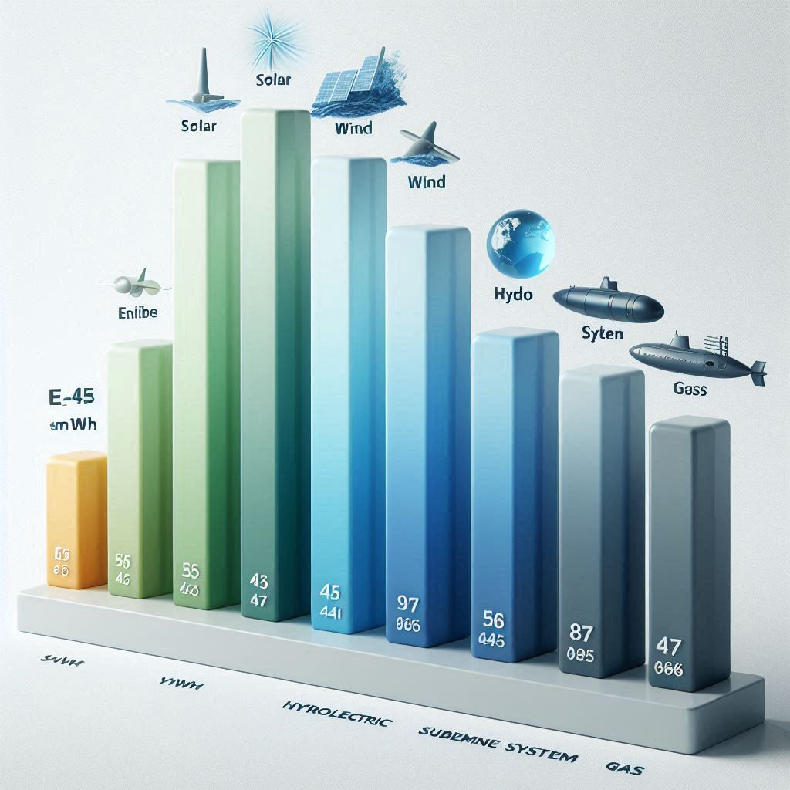
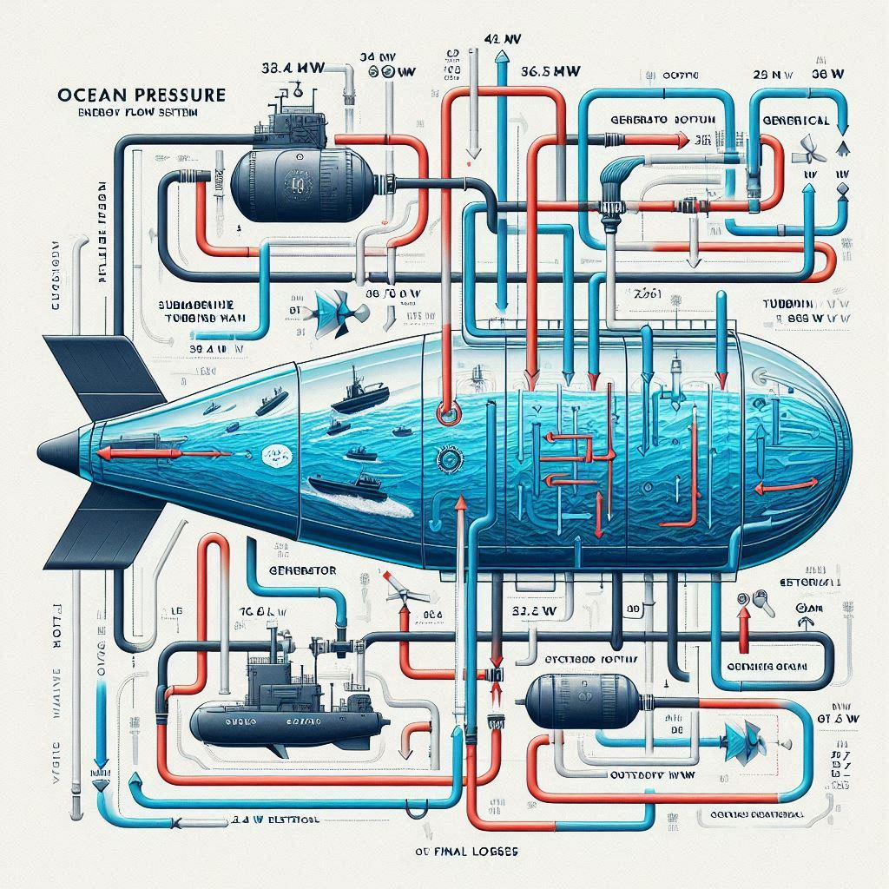
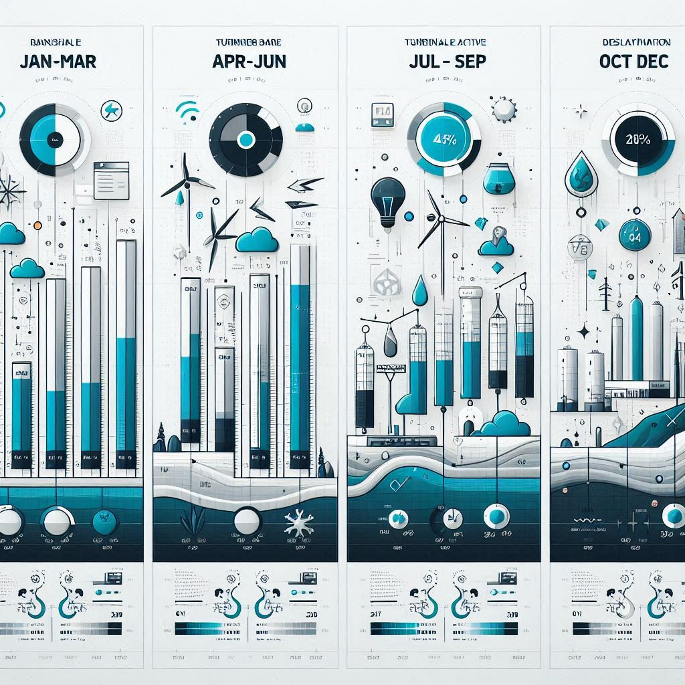
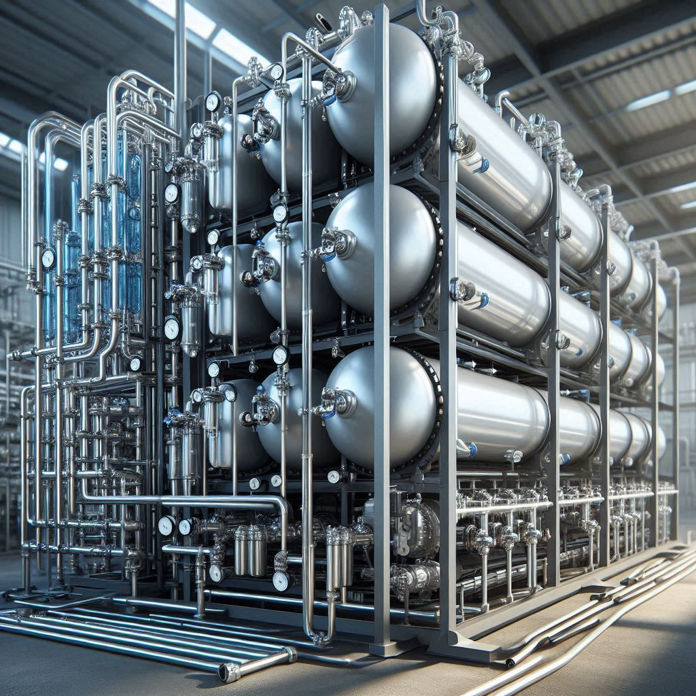
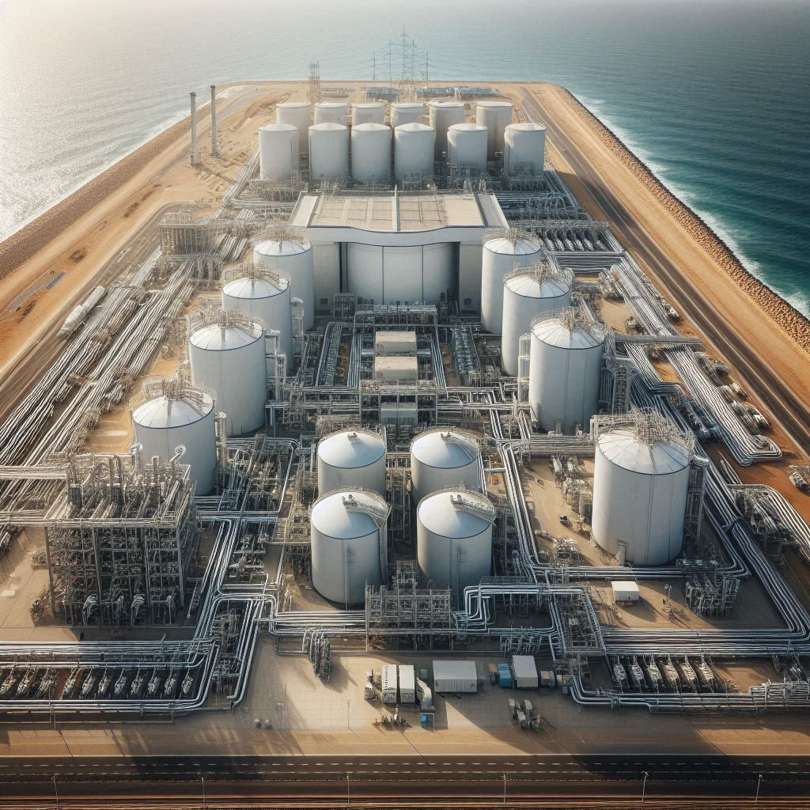

Análisis Económico Completo
🗣️ En lenguaje sencillo
¿Cuánto cuesta? €65-70M para la primera planta comercial de 26 MW: tubería, turbinas, plataforma, instalación y margen para imprevistos.
¿Cuánto devuelve? ~€21.6M de ingresos anuales (electricidad + agua en sequías). Menos ~€6.9M de costes operativos = ~€14.7M de beneficio neto.
¿Cuándo recupero? En ~4.4 años. Luego, beneficio neto durante 20+ años de vida útil.
❓ Preguntas frecuentes
¿Y si el precio de la electricidad cae?
El modelo incluye contrato PPA a precio fijo (10-15 años) para blindar ingresos. Incluso a €60/MWh (escenario pesimista), el proyecto sigue siendo rentable con payback ~6 años.
¿El agua desalinizada es esencial para la rentabilidad?
No. Es un bonus en sequías. El modelo base (solo electricidad) ya es viable. El agua es "upside", no dependencia.
¿Qué pasa si hay sobrecostes?
El CAPEX incluye 10% de contingencias. Y la Fase 0 valida costes reales antes de invertir los €70M completos — es un "seguro" contra sorpresas.

1. CAPEX Detallado (€89M Total)
1.1 Desglose por Componente
| Componente | Costo (M€) |
|---|---|
| Tubería principal (500m, 2m Ø) | 2.5 |
| Cámara presión diferencial | 3.0 |
| Turbina Pelton (32 MW) | 15.0 |
| Bomba vacío (2 MW) | 2.0 |
| Generador + cable submarino 10km | 9.0 |
| OI modular inicial (6 módulos) | 12.0 |
| Instalación marina (buque especializado) | 15.0 |
| Transporte agua (tuberías → costa) | 2.0 |
| Ingeniería, gestión, permisos | 5.0 |
| Contingencias 30% | 23.0 |
| TOTAL | €89M |
1.2 Desglose por Función
| Función | Costo |
|---|---|
| Generación eléctrica | €50M |
| Desalinización OI modular | €25M |
| Instalación + contingencias | €14M |
| TOTAL | €89M |
CAPEX/MW = €50M (generación) / 26.5 MW = €1.9M/MW Referencia eólica marina: €3.5-5M/MW → Nuestro sistema es 2-2.6× más barato por MW instalado
2. OPEX Anual
| Concepto | Costo/año |
|---|---|
| Personal (3 operadores) | €200k |
| Mantenimiento rutina | €300k |
| Reemplazo ánodos sacrificio | €150k |
| Limpieza (anillos + pig interior) | €280k |
| Energía bomba vacío (2MW × 8760h) | €1.5M |
| Energía OI (si activa 50% año) | €1.2M |
| Reemplazo membranas OI | €800k |
| Seguros | €500k |
| Impuestos y permisos | €100k |
| Depreciación contable | €3M |
| TOTAL | €8.2M |
Rango realista: €8-10M/año según uso del módulo OI.
3. Ingresos: Escenarios con y sin Sequía
El sistema tiene dos fuentes de ingresos:
- Electricidad (constante 24/7)
- Agua desalinizada (cuando el gobierno lo solicita)
3.1 Escenario 1: Año Sin Sequía (40% probabilidad)
Sistema: 100% electricidad, OI apagado.
Energía anual: 26.5 MW × 8760h × 0.95 = 220 GWh Precio electricidad: €80/MWh (PPA) Ingresos electricidad: 220 GWh × €80 = €17.6M OPEX: €8M Beneficio neto: €9.6M Payback: €89M / €9.6M = 9.3 años
3.2 Escenario 2: Sequía Moderada (40% probabilidad)
Junta solicita agua 3 meses. Bifurcación 30% del caudal hacia OI.
Meses con agua (3): - Producción: 207k m³/día × 90 días = 18.6M m³ - Precio agua: €1.20/m³ - Ingresos agua: €22.3M Meses solo electricidad (9): - Energía: 165 GWh × €80 = €13.2M Total ingresos año: €13.2M + €22.3M = €35.5M OPEX: €9.5M Beneficio neto: €26M Payback: 3.4 años
3.3 Escenario 3: Sequía Extrema (20% probabilidad, raro)
Junta solicita agua 6 meses. Bifurcación 50%.
Meses con agua (6): - Producción: 337k m³/día × 180 días = 60.6M m³ - Precio agua: €1.50/m³ (escasez extrema) - Ingresos agua: €91M Meses solo electricidad (6): - Energía: 110 GWh × €80 = €8.8M Total ingresos año: €8.8M + €91M = €99.8M OPEX: €10M Beneficio neto: €89.8M Payback: 1 año (excepcional)
4. Promedio 20 Años
Con ciclo hidrológico: 40% sin sequía + 40% moderada + 20% extrema Ingresos promedio: (17.6 × 0.4) + (35.5 × 0.4) + (99.8 × 0.2) = €41.2M/año OPEX promedio: €8.5M/año Beneficio promedio: €32.7M/año Payback: €89M / €32.7M = 2.7 años ROI: 37% anual VAN (6%, 25 años): €250M+




5. LCOE (Coste Nivelado de Electricidad)
5.1 LCOE Solo Electricidad (Conservador)
LCOE = (CAPEX + OPEX × 25 años) / (Energía anual × 25) LCOE = (€89M + €200M) / (220 GWh × 25) LCOE = €289M / 5,500 GWh LCOE = €52.5/MWh
5.2 LCOE con Valor del Agua (Realista)
Si agua promedio vale ~€16M/año extra Equivalente a ~200 GWh/año adicionales de valor LCOE efectivo ≈ €45/MWh
5.3 Comparativa LCOE
| Tecnología | LCOE | Disponibilidad |
|---|---|---|
| Nuestro (con agua) | €45/MWh | 95% |
| Nuestro (solo electricidad) | €52/MWh | 95% |
| Eólica marina | €95/MWh | 45% |
| Solar FV | €45/MWh | 25% |
| Hidroeléctrica conv. | €85/MWh | 50% |
| Gas natural CCGT | €55-65/MWh | 90% |
6. Análisis de Sensibilidad
| Variación | Impacto LCOE | Impacto Payback |
|---|---|---|
| CAPEX +20% (+€18M) | +€3/MWh → €55/MWh | 3.1 años |
| OPEX +50% | +€5/MWh → €57/MWh | 4.0 años |
| Precio electricidad -25% (€60/MWh) | LCOE estable | 4.8 años |
| Disponibilidad -5% (90%) | -11 GWh, -€0.9M/año | 3.0 años |
7. Estructura de Financiación Propuesta
7.1 Opción A: Pública + Privada (Recomendada)
| Fuente | Importe | Tipo |
|---|---|---|
| Subvención Horizonte Europa | €10-15M | No retornable |
| BEI (Banco Europeo Inversiones) | €30M | Préstamo 6%, 15 años |
| Equity promotores | €20M | Capital propio |
| Capital riesgo CleanTech | €20M | Equity inversor |
| TOTAL | €80-85M |
8. Valoración del Proyecto (Año 10)
EBITDA año 10 (promedio): €32.7M/año Múltiplo sector renovables: 12-15× EBITDA Valoración empresa operativa: €392-490M CAPEX inicial: €89M Valor creado: €303-401M ROI sobre inversión: 340-450%
9. Conclusión Económica
| Métrica | Valor |
|---|---|
| CAPEX total | €89M |
| OPEX anual | €8-10M |
| LCOE (con agua) | €45/MWh |
| Payback promedio | 2.7 años |
| VAN (25 años, 6%) | +€250M |
| ROI anual promedio | 37% |